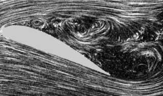

유동박리 (flow separation)
검수 완료

쉽게 풀면
유동박리는 표면에 붙어서 흐르던 공기가 어느 지점에서 더 이상 표면을 따라가지 못하고 떨어져 나가는 현상이다. 특히 흐름이 진행 방향으로 압력이 점점 높아지는 구간을 만나면 에너지를 잃은 경계층이 앞으로 나아가지 못하고 뒤로 밀려 소용돌이치는 영역을 만든다. 날개에서 이 현상이 크게 일어나면 실속으로 이어지고, 항력도 크게 늘어난다. 받음각이 지나치게 커지면 날개 표면을 따라가던 공기 흐름이 더 이상 표면을 붙잡지 못하고 떨어져 나가면서 실속으로 이어질 수 있다.
왜 중요한가
유동 박리는 실속·버피팅·압력항력 급증의 직접 원인이므로, 최대양력계수와 임계 받음각을 예측하는 모든 연구가 박리가 언제 어디서 시작되는지를 다룬다. 고양력장치와 경계층 제어 설계는 결국 박리를 늦추는 기술이며, CFD 검증에서는 박리점 위치가 난류 모델의 정확도를 판정하는 지표로 쓰인다. 유동박리는 양력의 급격한 감소와 항력의 급증을 동시에 일으키는 현상이어서, 항공기 안전 설계에서 반드시 피해야 할 임계 상황으로 다뤄진다.
핵심 정리
유동 박리(경계층 박리)는 경계층이 표면에서 떨어져 나가 후류를 만드는 현상이다. 유체가 물체의 가장 두꺼운 부분을 지나며 느려지거나 넓어지는 통로를 지날 때, 흐름이 느려진다는 것은 압력이 올라간다는 뜻이므로 흐름 방향으로 압력이 오르는 역압력 기울기가 생긴다. 표면 가까이의 유체는 운동량을 잃어 멈췄다가 반대로 흐르기 시작하고, 그때 흐름이 표면에서 벗겨진다.
충분히 먼 거리를 역압력 기울기 속에서 흐른 경계층이 박리점에서 떨어진다. 박리된 흐름은 와류와 소용돌이로 흩어지고, 표면 압력은 더 오르지 않고 거의 일정하게 유지된다.
예시로 보기
난류 경계층은 층류 경계층보다 대략 열 배 가까이 강한 감속을 견딘다. 설계자는 이를 이용해 일부러 일찍 난류로 천이시킨다. 테니스공의 털, 골프공의 딤플, 글라이더의 난류 발생기, 항공기의 와류 발생기가 그 예이다.
항공에서는 박리가 양력을 줄이고 압력 항력을 늘리며 진동(버핏)을 일으킨다. 날개에서 심한 박리가 생기면 실속이 된다. 덕트와 기계 안에서는 손실, 효율 저하, 압축기 서지, 진동을 일으킨다. 박리가 규칙적인 소용돌이를 떨어뜨리면(카르만 와열) 교번하는 힘이 생겨, 구조물의 공진 주파수와 맞으면 진동이나 파손이 날 수 있다. 급히 넓어지는 덕트 같은 내부 유동에서는 박리 영역이 재부착점에서 벽에 다시 붙기도 한다.
자주 하는 오해
- 박리는 '속도가 빨라서' 생기는 것이 아니라 압력이 오르는 방향으로 흐를 때 생긴다.
- 박리점에서 벽면의 속도 기울기가 0이고 그 뒤에는 역류가 생긴다. 후류는 외부 흐름과 압력장을 바꿔 압력 항력을 키운다.
- 난류가 항상 나쁜 것은 아니다. 난류 경계층이 박리를 늦추므로 골프공 딤플이나 항공기 와류 발생기처럼 일부러 난류 천이를 앞당기는 설계가 있다.
- 박리가 일어난 뒤 하류에서는 시간이 지나면 역류가 없는 상태로 안정되기도 한다.
논문에서는 이렇게 쓰입니다
실제 논문에서
국내 학술지 논문에서 이 용어가 쓰인 문장을 그대로 옮겼다. 제목·학술지·연도와 원문 링크를 함께 적었다.
“적용된 노즐이 원뿔형 노즐이었음에도 핀틀 끝단에서 발생한 유동박리에 의한 충격파 때문에 Contoured 또는 Optimized 노즐에서 나타나는 Cap-shock pattern과 유사한 유동 구조가 나타났다.”
핀틀 노즐 유동장의 수치해석적 연구, 한국추진공학회지, 2009 · KCI 한국학술지인용색인 · 원문 보기 ↗
“또한 모서리에서 발생한 유동박리는 큐브상부 뿐만 아니라 측면의 표면압력특성에 상당한 영향을 나타내었다.”
방위각 변화에 따른 연속구조물의 풍하중특성연구, 한국풍공학회지, 2012 · KCI 한국학술지인용색인 · 원문 보기 ↗
“공력해석을 위해 상용해석 소프트웨어를 사용하였으며, 벽면에서의 역압력 구배의 영향으로 발생하는 유동박리와 2차 유동을 예측하기 위하여 난류모델을 사용하였다.”
S-Duct 입구 형상에 따른 유동 특성에 관한 연구, 한국항공우주학회지, 2015 · KCI 한국학술지인용색인 · 원문 보기 ↗
예시 문장
아래 예문은 용어의 쓰임을 보이려고 만든 것으로, 실제 논문 문장이 아니다.
날개를 특정 각도로 기울였을 때 날개 뒤쪽 상당 부분에서부터 공기 흐름이 표면에서 떨어져 나가기 시작한다는 것을 실험으로 눈으로 확인했다는 내용이다.
이 문장은 유동박리가 단순한 흐름의 변화가 아니라 항력 증가와 실속 같은 실질적인 성능 저하로 이어질 수 있는 현상임을 설명한다.
조금 더 깊게 보면
박리는 경계층이 역압력구배를 이기지 못해 벽면에서 떨어져 나가는 현상으로, 앞전 박리와 뒷전 박리는 실속 특성이 서로 달라 앞전 박리형은 양력이 급격히 꺾이고 뒷전 박리형은 완만하게 줄어든다. 천음속에서는 충격파가 경계층을 박리시키는 충격파-경계층 간섭이 생겨 아음속 실속과는 다른 메커니즘이 작동하므로, 같은 박리라도 원인에 따라 대책이 다르다.
주의할 점
유동박리는 실속과 동의어처럼 쓰이기도 하지만, 엄밀히는 박리가 국소적으로 시작되는 것과 날개 전체의 양력이 급감하는 실속은 정도의 차이가 있는 별개의 단계이다.
참고 문헌
- Wikipedia contributors. (n.d.). Flow separation. Wikipedia.
- Wikipedia contributors. (n.d.). Boundary layer separation. Wikipedia.